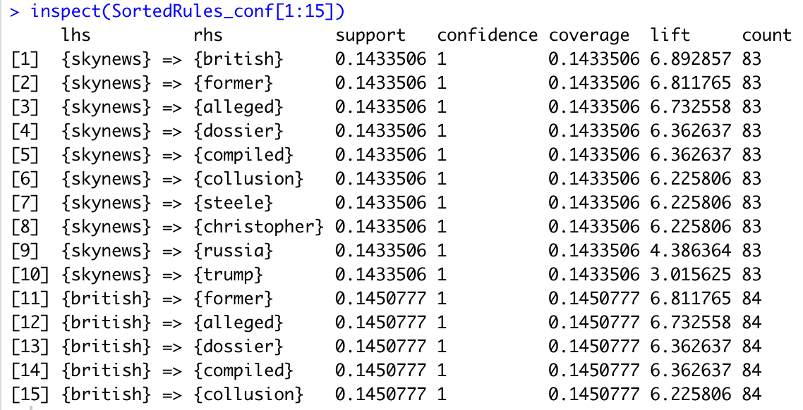
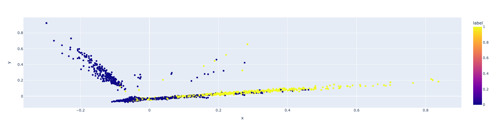

Infographic
Interesting Finding Through ML, Data Mining
Asscoiate Rule Mining Part
Top 15 Rules For Support

Chirstioper, a Former intelligence worker from the UK. Collusion from Russia, refer to a scandal of U.S. Presidential Election Rigged by Foreign Powers.
We still remember that On May 10, 2017, U.S. President Donald Trump disclosed classified information to Russian government representatives, creating political and security concerns in the United States and its allies, especially Israel. It seems that the Donald Trump's disclosures of classified information is a hot topic in tweets.
Top 15 Rules For Confidence

Skynews, a famous UK Car Radio Media.The result tell us that which tell us that skynews might be the first media to recover the Donald Trump's disclosures of classified information. With the assumption, I search in the google with the key word 'Sky New, Trump, Russia'. This is the first searching result 'Christopher Steele: Confessions of a former British spy on Johnson, Putin, Trump, and James Bond'. It proves my judgement.
NetworkD3 Visualization
There is only one center point of the whole network "skynews". Other points are surrounding the center and their words are always overlapping. Most frequency keyword are "British", "Russia", "Trump", indicating that skynews is a media in England and report the Donald Trump's disclosures of classified information.
Decision Tree Part
Tree Visualization

Three different decision trees chose the total number of county votes as the most important classification feature. This indicates that there is a very strong association between the number of votes in the state and the supporters in the 2016 election.

I checked the relevant information and found that Trump's supporting states are mostly from the more sparsely populated and economically underdeveloped states. While Hillary's support states are mostly from economically developed, highly populated states such as California.That’s the most valuable information found in Decision Tree.
Naive Bayes Part

I chose the text of Trump's tweets and divided the statements made before and after Trump was elected president into two categories, and tried to use a Bayesian model to classify the tweets made before and after Trump was elected president.I used the pca dimensionality reduction technique to reduce the X independent variable to 2 dimensions and plotted categorical scatter plots for visualising the decision boundaries of the Bayesian model. The results are very interesting, with the data points appearing as radial lines. And the model argues that the bottommost presenting radial data points appear to be in two categories. It can therefore be argued that Trump's rhetoric began to take on a different character before 2016.
And I got some important information from wiki.
SVM Part
The svm with default parameters does not effectively utilize qualitative variables such as county affiliation and does not effectively distinguish between the statements made by Hillary and Trump during the presidential election. My interpretation is that statistical information such as number and vote share do not differ significantly between counties supporting different candidates, and thus do not distinguish well between Trump-supporting and Hillary-supporting counties. If we need to improve the classification effect, we need to add information such as the economic development of the county and replace the Gaussian kernel to solve the dimensional explosion problem brought by one-hot variables.